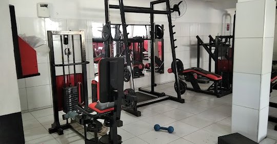

Academias
A saúde física e mental são extremamente importantes para uma condição de vida melhor, e Curitiba tem estruturas suficientes para fornecer total apoio a você que quer manter ou começar com hábitos de vida mais saudáveis. E para ajudar vocês, nós separamos as melhores academias de Curitiba. Só escolher a mais próxima a você.

Smartfit
Começando pela Smartfit, uma das academias de rede mais populares, sua presença em curitiba é muito evidente.Unidades:
- Av. Sete de Setembro, 2775
- Rua da Consolação, 3080
- Avenida Angélica, 2424
- Rua Brigadeiro Franco, 2300
- Rua Eduardo Carlos Pereira, 3605
- Av. Nossa Senhora de Lourdes, 63
- Ampla área de musculação
- Aulas de spinning
- Dança
- Pilates
- Treino funcional

Endereço: Rua Anita Garibaldi, 2180
BlueFit
Umas das academias Curitiba ultramodernas e com bom custo-benefício, a BlueFit está espalhada em várias cidades do Brasil. Ela funciona 24 horas no Batel e possui equipamentos de musculação de última geração, além de aulas de ginástica, dança e artes marciais.
Unidades:- Shopping Palladium Avenida Presidente Kennedy, 4121 Portão
- Shopping Mueller Avenida Cândido de Abreu, 127 Centro Cívicog
- Avenida Sete de Setembro, 4682 Batel
- Avenida República Argentina, 2751 Portão
Thai Brasil
É uma academia tradicional, no formado “oldschool”, com bom custo-benefício. Oferece lutas e artes marciais (Muay thai, Jiu jitsu, Boxe, Judô, MMA e Submission), além de aulas de spinning, treino funcional, yoga, pilates, dança e área de musculação.